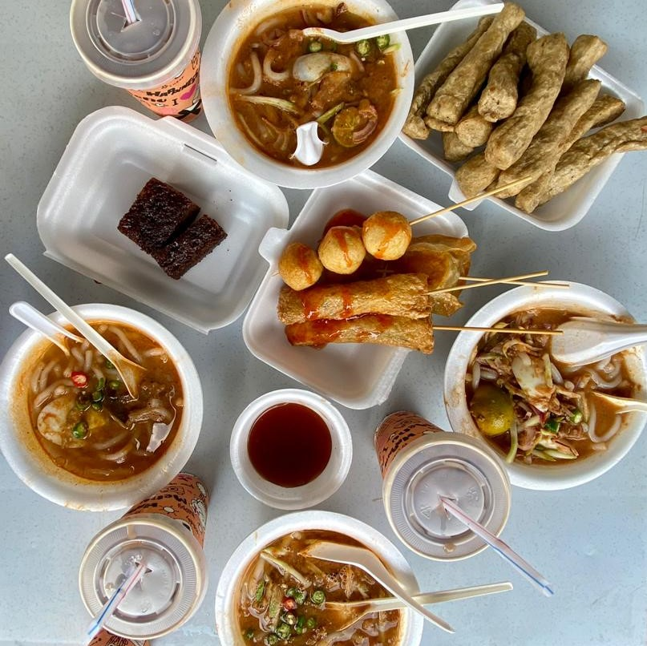
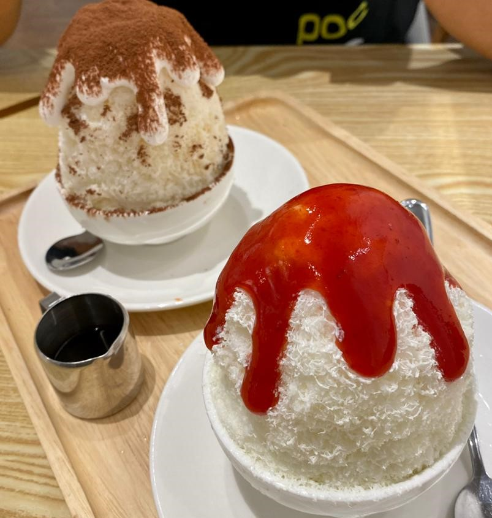
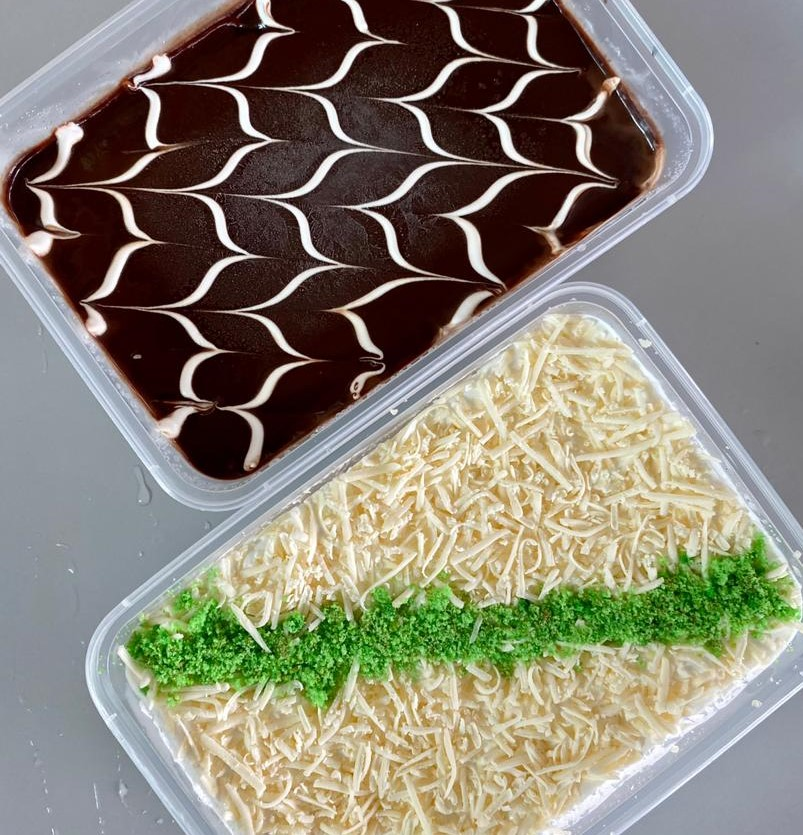
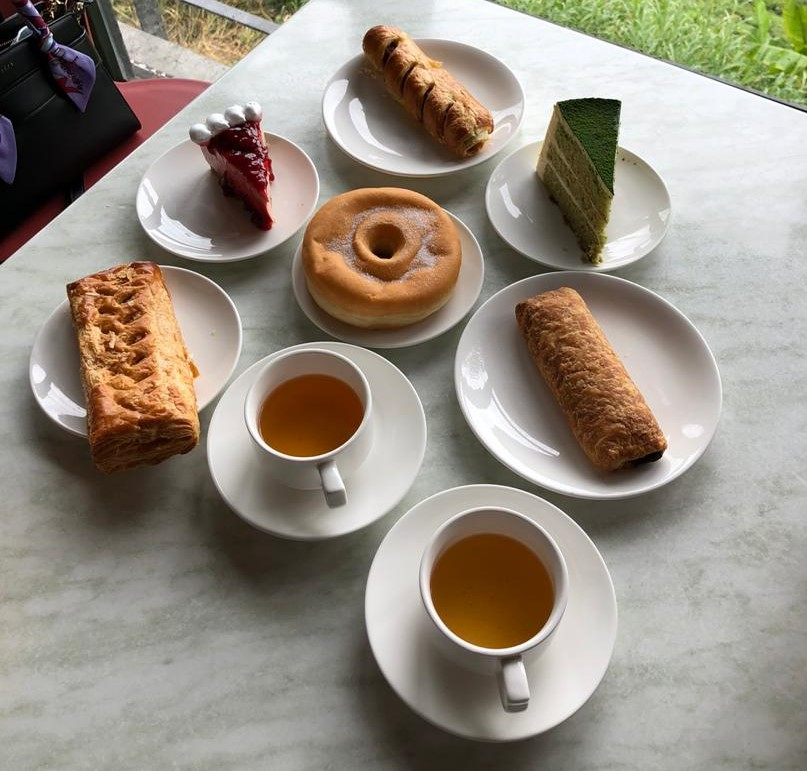
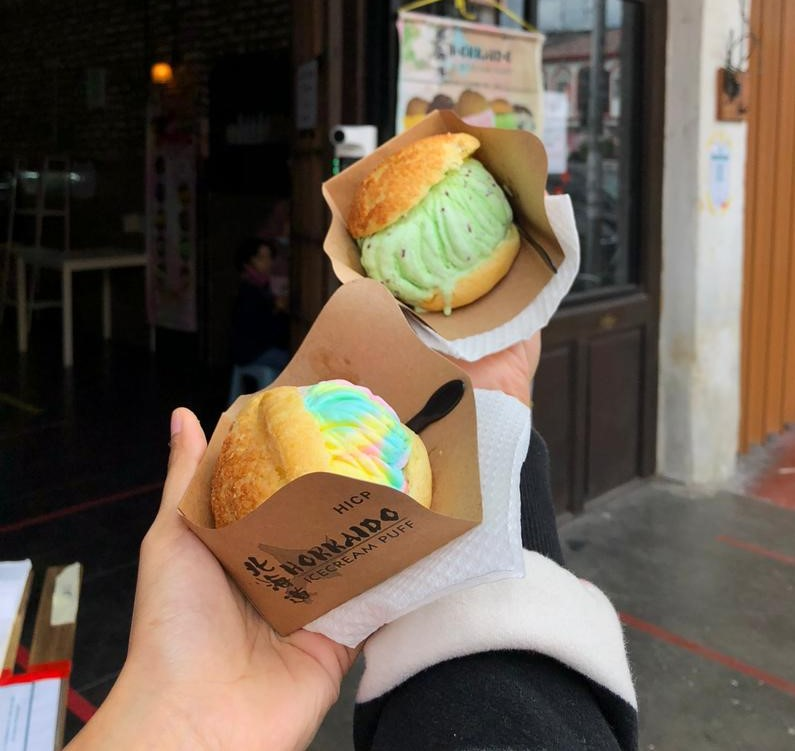
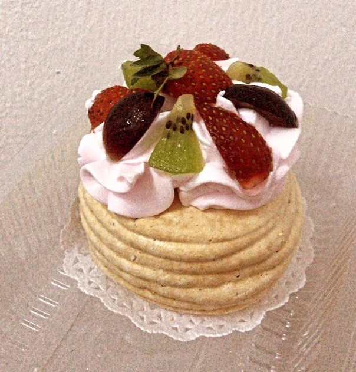
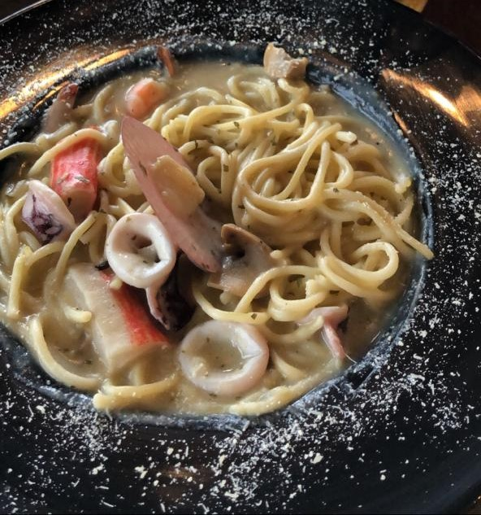
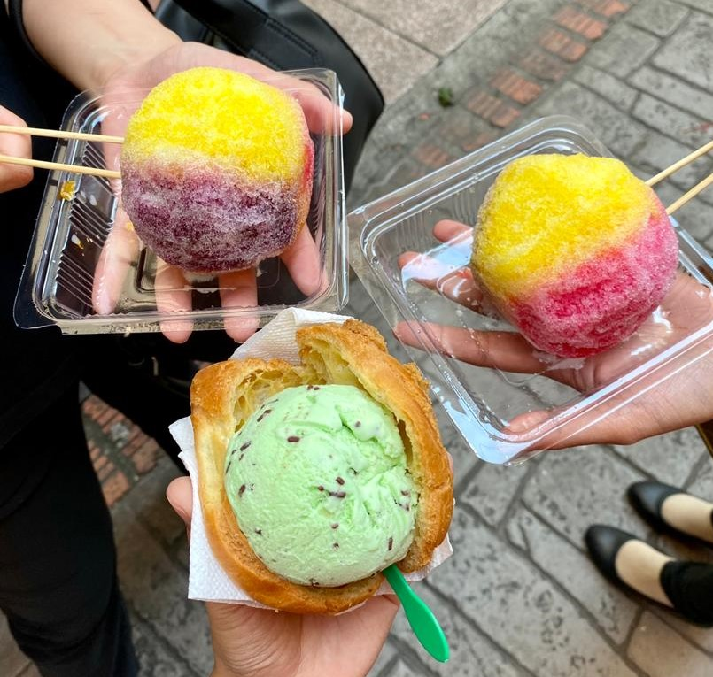

GOOD FOODS
STREET FOODS

-The street food tastes good as always
-I would definitely eats street foods again and again without no doubt
-10/10 rate
STRAWBERRY BINGSU

-Flavoured bingsu is a good choice on sunny day
-Mykori desserts and cafe served the best bingsu ever
-10000/10 rate
CAKES

-These two flavours wins my heart the most
-The chocolate cake riched with moist chocolate while the pandan cake smells so good
-Chocolate cake and pandan cake 10/10 rate
ENGLISH BREAKFAST

-English breakfast in Cameron Highland is a must
-The combination of the fluffy cakes and breads with a cup of tea is a good combination
-1000/10 rate
HOKKIEN ICE CREAM

-This ice cream is a must try
-It tastes good as its colours
-9/10 rate
MINI PAVLOVA

-Mini pavlova just tastes as the actual size
-The combination of fresh fruits and the cream is just good
-9/10 rate
SEAFOOD SPAGHETTI

-Seafood and spaghetti is such a great combination
-It is creamy too and I love it
-11/10 rate
RAINBOW ICE SHAVE

-This kind of ice shaves reminds me back on my childhood
-It tastes sweet and sour
-10/10 rate